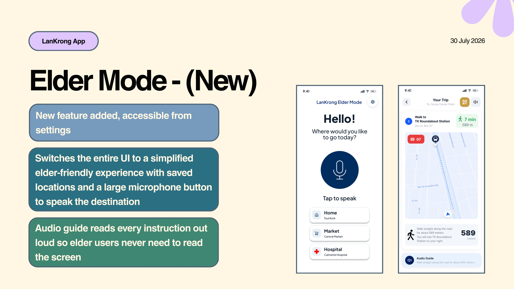

Hello, I'm Heng Sok.
Computer Science student at Paragon International University, focused on backend development with Laravel. Hands-on experience across full-stack projects, database design, and UX/UI. This is my individual HCI course portfolio documenting my design process, weekly progress, and project work for the LanKrong urban transit application.

About Me
01I'm a Computer Science student with a strong interest in backend development and system architecture. The HCI course pushed me to think beyond code and consider the human side of every interaction I build.
Through the LanKrong project, I applied UX research methods, Figma prototyping, and usability testing for the first time in a structured academic setting. It changed how I think about product design.
My short-term goal is to secure a backend development internship in Phnom Penh for Summer 2026. Long-term, I want to grow into a full-stack engineer who can bridge technical backend systems with intuitive user experiences, skills I'm actively building through this HCI course.
About This Project
02About LanKrong
LanKrong is a public bus navigation app designed for commuters in Phnom Penh, Cambodia. Built as a final project for MIS 380 Human-Computer Interaction at Paragon International University, the app guides users step-by-step from finding the nearest bus station to reaching their destination, no route memorization required.

The Problem
Phnom Penh has a functioning city bus system, but most commuters avoid it. The existing City Bus app only shows live bus locations with no trip planning. Station panels are overwhelming and hard to read quickly. There is no tool that tells a user which bus to take, where to board, or where to get off. As a result, students and workers default to tuk-tuks even when the bus would be cheaper and faster.
User Pain Points
Limited Route Knowledge. Users only know 2 to 3 memorized routes and avoid exploring unfamiliar ones.
No Guidance, Just Data. The existing City Bus app provides locations but no guidance on what to do with that information.
Confusing Station Panels Station panels are too confusing for new or occasional riders.
Fear of Boarding Wrong. Fear of boarding the wrong bus discourages people from trying.
Defaulting to Tuk-Tuks. When uncertain, users switch to tuk-tuks instead of figuring the bus out.
Design Process
- Conducted user research through surveys and interviews to understand why commuters avoid public buses.
- Key insight: users don't need more data, they need to be told what to do.
- Built initial wireframes focused on step-by-step trip guidance.
- Ran usability testing with 2 real participants across 2 task scenarios.
- Collected UX review feedback from the course lecturer.
- Iterated on the full UI based on findings: redesigned the navbar, improved walking distance visibility, added sorting options, fixed subscription transparency, and added a location permission fallback.
- Added Elder Mode in the final version with voice input, simplified UI, and full audio guidance for elderly users.
- Added in-app wallet payment with QR code for paying bus fare directly in the app.


Skills Used
Reflection
My Other Projects
Beyond this HCI course, I've built full-stack apps, database systems, and technical projects using Laravel, Spring Boot, and more.
View in Main PortfolioWeekly Progress
03Documenting my homework submissions, lesson notes, reflections, and next steps throughout the course.
Week 1–2 — Introduction to HCI & Needfinding
- Needfinding interview report (3 commuter interviews)
- Empathy map for primary user persona
- Photo diary of observed transit pain points
- Learned that assumptions about users are almost always wrong
- Field observation reveals pain points interviews alone cannot
- Next: Define user personas from interview data
Week 3–4 — Personas & Journey Mapping
- Two detailed user personas with goals and frustrations
- Customer journey map for primary persona
- Problem statement document
- Journey maps reveal emotional highs and lows we normally skip over
- Writing a clear problem statement forced me to narrow scope
- Next: Begin information architecture and sitemap
Week 5–6 — Information Architecture & Low-Fi Wireframes
- App sitemap and navigation structure
- Paper wireframes for 6 key screens
- Annotated wireframe walkthrough document
- Paper wireframes are faster to iterate than digital, do this first
- Navigation depth beyond 3 levels confused test participants
- Question: How do we decide when low-fi is ready for high-fi?
- Next: Transfer to Figma and build component library
Week 7–9 — High-Fidelity Figma Prototype
- Full Figma component library (buttons, inputs, cards, nav)
- High-fidelity prototype with interactive flows
- Design token documentation (colors, typography, spacing)
- Consistent spacing using an 8pt grid made everything cleaner
- Auto layout in Figma saved hours of manual resizing
- Accessibility contrast ratios matter more than I initially thought
- Next: Recruit participants for usability testing
Week 10–12 — Usability Testing & Heuristic Evaluation
- Usability test scripts and task scenarios
- Test results report (5 participants, 3 tasks each)
- Heuristic evaluation against Nielsen's 10 principles
- Iterated prototype v2 with fixes applied
- Users struggled with the ticket confirmation screen, fixed visibility of system status
- Think-aloud protocol gives richer data than post-task surveys alone
- 5 users is enough to catch 85% of usability issues (Nielsen's rule)
- Next: Final presentation and portfolio submission
Team Collaboration
04LanKrong Design Team
Our team of 3 collaborated across research, wireframing, and prototyping phases to build the LanKrong app together.
View Team PortfolioProject Manager
Led the project timeline and team coordination, oversaw the needfinding process, and guided the design decisions behind the high-fidelity Figma prototype for the ticket booking flow.
- Defined the problem statement and research goals for the project.
- Conducted 3 user interviews and synthesized findings.
- Ran the user survey and analyzed response patterns.
- Created 2 user personas and empathy maps.
- Built paper wireframes for booking and route screens.
- Designed the full Figma component library.
- Designed all high-fidelity screens from home to booking confirmation.
- Built the interactive Figma prototype with full click-through flow.
- Led usability test sessions with 5 participants.
- Logged usability issues and rated them by severity.
- Ran the affinity mapping and impact/effort prioritization workshop.
- Redesigned the navbar, walking distance UI, and subscription flow based on test findings.
- Added Elder Mode with voice input and audio guidance.
- Added in-app wallet payment with QR code.
- Incorporated lecturer UX review feedback into the final iteration.
- Wrote the final project documentation and presentation deck.
- Managed the overall project timeline from research to final delivery.
Questions or feedback?
Reach out.
For my HCI lecturer or teammates reviewing this portfolio.